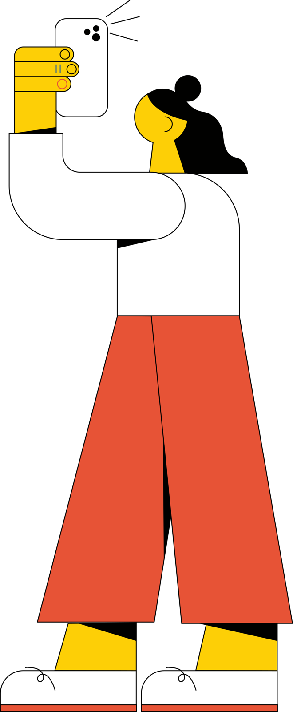

References / Illustration / 381
WikiCon Brasil 2022 visual identity figure (Isadora Pinheiro)
A figure from the visual identity of the WikiCon Brasil 2022 conference: a woman with yellow skin, huge block limbs, and a tiny head, holding up a phone.
- Source
- Wikimedia Commons: WikiCon Brasil 2022 – Ícone – Ser humano 4
- Creator
- Isadora Pinheiro (User:Zaphyrza), for Wiki Movimento Brasil
- Made
- 2022 (file dated 29 March 2022)
- Style
- Corporate Memphis (agent-proposed, not yet reviewed by a person)
- Moods
- Friendly, bold, playful
- Evidence
- Inspected a 1280 × 3101 rendering of the SVG from Wikimedia Commons and the first page of the identity PDF. Stored the figure, flattened onto white and reduced.
- Reviewed
- Rights
- Open license, stored. License: CC-BY-SA-4.0. Rights policy

Context
Commons describes the file as an icon of the visual identity of WikiCon Brasil 2022 and credits Isadora Pinheiro (User:Zaphyrza) as author, under CC BY-SA 4.0. Wikimedia Commons.
The identity PDF names Wiki Movimento Brasil as organizer, with support from the Wikimedia Foundation, the Goethe-Institut, nic.br, and cgi.br. Wikimedia Commons.
Observed
- The figure is about four times as tall as it is wide. The head is a small yellow circle with a black bun of hair, and one curved line marks the ear.
- A white shirt forms one huge rounded arm that bends up to hold a white phone above the head; three short lines show the phone’s flash.
- The trousers are two long orange-red trapezoids that flare to the floor, over yellow ankles and white shoes with thin laces.
- All shapes are flat fills in yellow, orange-red, white, and black, each with a thin black outline.
Why it belongs
The proportions are more extreme than Alegria’s: the body is built from a few large geometric blocks. The outline and the limited palette point toward the later, more graphic variants of the style.
Borrow
Exaggerate one limb into a large block that holds the key object, and keep the head as a small circle.
Measured
Machine-extracted by tools/image-traits.py on . Full measurement.
- Mean chroma
- 0.24
- Palette
- #ffffff 59%
- #e75336 26%
- #fdcf06 5%
- #010100 3%
- #959493 1%
- #b4b4b3 1%
- #dcdde0 1%
- #81392b 1%

